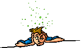

MiGuXeiToR
Embriagueitor
Engripeitor
Subwaytor
Tabuada
Relógio
Cara ou Coroa?
vira|ɐɹıʌ
JavaScript DESLIGADO
Você tem que
ligar o JavaScript
em seu navegador,
pois as coisinhas precisam dele!
Embriagueitor
Sóbrio
Torto
Clique aqui para tuitar isso!!!

Instruções:
Digite o texto na caixa verde (
exemplo
)
Veja o resultado na caixa vermelha
Não beba e dirija (
texto
,
fotos
,
vídeo
)
Comentários
|
Divulgação
|
Feito com expressões regulares
ATENÇÃO: Este site não apóia nem incentiva a ingestão de bebidas alcoólicas. Muito pelo contrário, esta ferramenta é uma sátira às pessoas que abusam da bebida, agindo como bobos da corte para os que estão ao redor.
Copyright © 2008-2012
Aurelio Jargas
@oreio
 MiGuXeiToR
MiGuXeiToR
 Embriagueitor
Embriagueitor
 Engripeitor
Engripeitor
 Subwaytor
Subwaytor
 Tabuada
Tabuada
 Relógio
Cara ou Coroa?
Relógio
Cara ou Coroa?
 vira|ɐɹıʌ
vira|ɐɹıʌ

 Clique aqui para tuitar isso!!!
Clique aqui para tuitar isso!!!